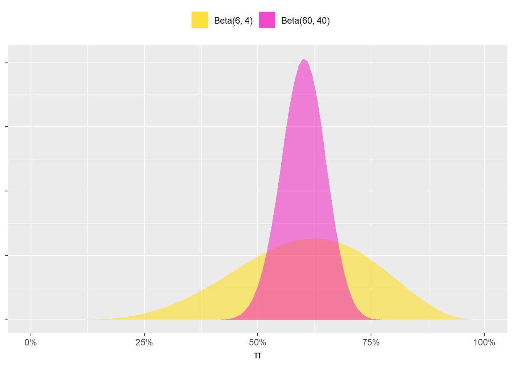
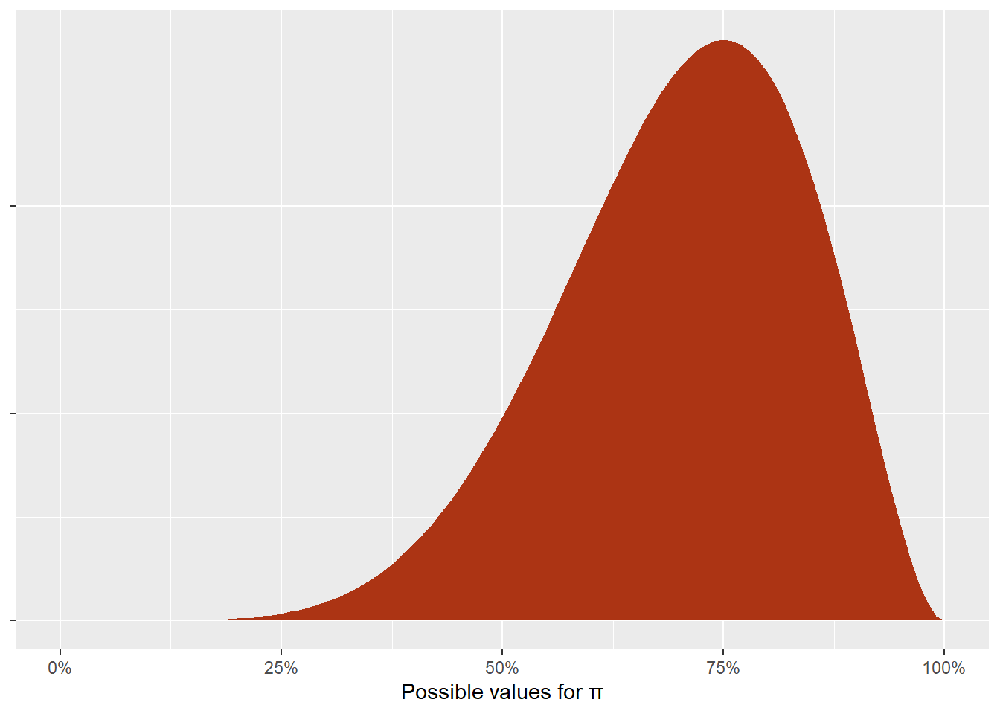

library(tidyverse)
library(glue)
library(scales)
library(gt)
library(brms)
library(tidybayes)
library(ggdist)
library(parameters)Introduction
This report is a tool to help me and others at Forest Research better understand Bayesian inference. It is a guide to Bayesian proportion tests in R using the {brms} package and Forest Research’s Public Opinion of Forestry 2023: UK survey. The survey asked 11,055 adults (aged 16+) in the UK a range of questions on forestry and forestry-related topics. Here we will explore the proportions of respondents who reported visiting woodland in the last few years and those that support increased woodland creation (afforestation) in response to climate change.
The report is heavily (!) based on the fantastic blog post A guide to Bayesian proportion tests with R and {brms} by Andrew Heiss, assistant professor at Georgia State University (published 15 May 2023). This is the first thing I have read where I have come away feeling like I have understand a little about Bayesian inference.
The first thing we need to do is load all the necessary packages for the analysis.
Data wrangling and exploration
The first question we are going to explore is labelled KFW_Q1a in YouGov spreadsheet and reads:
In the last few years have you ever visited forests or woodlands for walks, picnics or other recreation?
To explore the results we need to load in the data. As the data set is nice and small, it’s easy enough to write it out manually. For reference, the data come from the the raw spreadsheet supplied by YouGov, the market research company that conducted the survey on behalf of Forest Research.
q1_raw <- tribble(
~gender, ~n, ~total,
"Female", 4295.632, 5693.3235,
"Male", 3890.773, 5361.675
)We are going to explore the difference in the proportions shown in blue in Table 1.
Table 1: Contingency table showing the proportion of men and women that visited woodland in the last few years, UK, 2023
| Gender | Proportion |
|---|---|
Female |
75.5% |
Male |
72.6% |
The questions
The aim of this article is to illustrate the logic of Bayesian proportion tests using data from the UK Public Opinion of Forestry Survey 2023 by answering two questions:
- Is the proportion woodland visitors higher among female respondents than male respondents? (Shown in blue in Table 1.)
- Do adults in the UK vary in their support for woodland creation as a climate change mitigation strategy? (Shown in orange in Table x.)
Question 1: woodland engagement among male vs. female respondents
…
For our first question, we want to know if there is a substantial difference in the proportion of woodland visitors among male and female respondents, or whether the difference between them is zero (in Table 1).
In formal mathematical notation, we will call this the estimand \(\theta\), which is the difference between the two proportions \(\pi\):
\[ \theta = \pi_{\text{woodland visitor}_{\text{female}}} - \pi_{\text{woodland visitor}_{\text{male}}} \]
Classical frequentist way
…
Null hypothesis:
\[ \theta = 0 \]
q1_matrix <- q1_raw |>
mutate(n_didnt = total - n) |>
select(-c(gender,
total)) |>
as.matrix()We can now pass q1_matrix to prop.test():
prop.test(q1_matrix)
2-sample test for equality of proportions with continuity correction
data: q1_matrix
X-squared = 11.802, df = 1, p-value = 0.0005915
alternative hypothesis: two.sided
95 percent confidence interval:
0.01229983 0.04537957
sample estimates:
prop 1 prop 2
0.7545034 0.7256637 We have proportions that are the same as in Table 1 (75.5% / 72.6%) and the 95% confidence interval for the difference. Oddly, R doesn’t show us the difference. The parameters() function from the {parameters} package offers a more informative output (Table 2).
prop.test(q1_matrix) |>
model_parameters()Table 2:
| Proportion | Difference | CI low | CI high | Chi2 | p | Method |
|---|---|---|---|---|---|---|
75.45% / 72.57% |
2.88% |
1.23% | 4.54% | 11.8 | 5.92 × 10−4 | 2-sample test for equality of proportions |
We have a \(\chi^2\) statistic of 11.8 which is statistically significant. In a hypothetical world where there’s no difference in the proportions, the probability of seeing a difference of at least 2.88 percentage points is tiny (\(p < 0.001\)). We, therefore, have enough evidence to confidently reject the null hypothesis and declare that the proportions are not the same. With the confidence interval, we can say with 95% confidence that the interval 0.012 to 0.045 contains the true population parameter.
Let’s leave the frequentist paradigm behind.
Bayesian way with {brms}
…
The official statistical term for this kind of data-generating processes (a bunch of independent trials with some probability of success) is a binomial distribution. It is defined by three parameters:
\[ y \sim \operatorname{Binomial}(n, \pi) \]
Where:
- Number of successes (\(y\)): the number of respondents who visited woodland in the last few years, or
nin our Q1 data set. - Probability of success (\(\pi\)): the probability that someone visited woodland in the last few years, or the thing we want to model for each gender.
- Number of trials (\(n\)): the total number of people surveyed, or
totalin our Q1 data set.
We are interested in the probability of a “success” (i.e., \(\pi\)), which is the number of successes divided by the total number of trials:
\[ \frac{\text{Number of successes}}{\text{Number of trials}} \]
Or:
\[ \frac{\text{Number of successes}}{\text{Number of successes} + \text{Number of failures}} \]
Expressed in terms of our data on woodland visitors in the UK Public Opinion of Forestry 2023 survey:
\[ \frac{\text{Number of woodland visitors}}{\text{Number of respondents}} \] Similarly, we can split the denominator into woodland visitors and non-visitors:
\[ \frac{\text{Number of woodland visitors}}{(\text{Number of woodland visitors}) + (\text{Number of non-visitors)}} \]
Where a non-visitor will, in our case, include those that did not go outside and those that visited other green and natural spaces (e.g., mountains or the sea).
The \(\alpha\) and \(\beta\) parameters correspond to the number of successes and failures, respectively:
\[ \frac{\alpha}{\alpha + \beta} \]
With these shape parameters we can create any percentage or fraction we want. In addition, we can control for the uncertainty if the distribution by changing with the size of the parameters. For instance, if we think that there is a 60% chance of some event this could be represented with \(\alpha = 6\) and \(\beta = 4\), since \(\frac{6}{6+4} = 0.4\). We could also write it as \(\alpha = 60\) and \(\beta = 40\), since \(\frac{60}{60+40} = 0.4\) too. Both are centred at 40% but Beta(60, 40) is a lot narrower and more certain than Beta(6, 4) (Figure x).
Figure x:
ggplot() +
stat_function(fun = ~dbeta(., 6, 4), geom = "area",
aes(fill = "Beta(6, 4)"), alpha = 0.5) +
stat_function(fun = ~dbeta(., 60, 40), geom = "area",
aes(fill = "Beta(60, 40)"), alpha = 0.5) +
scale_x_continuous(labels = label_percent()) +
scale_fill_manual(values = c("Beta(6, 4)" = "#FFDC00",
"Beta(60, 40)" = "#F012BE")) +
labs(x = "π", y = NULL, fill = NULL) +
theme(axis.text.y = element_blank(),
legend.position = "top")
We have already seen the data and know that the proportion of woodland visitors is around 73% of male respondents and 76% for female respondents. But let’s pretend that we haven’t seen the data and all our prior knowledge is based on the 2021 Public Opinion of Forestry survey. In the previous survey, 69% of respondents reported visiting woodland in the last few years. To make the maths easier, let’s say 70% instead. This implies something like a Beta(7, 3) distribution (since \(\frac{7}{7+3} = 0.7\)), with lots of high possible values greater than 50% but not a lot lower than 40%. We could narrow this down by scaling up the parameters (e.g., Beta(70, 30)), but leaving the prior distribution wide like this allows for more possible responses.
ggplot() +
stat_function(fun = ~dbeta(., 7, 3), geom = "area", fill = "#AC3414") +
scale_x_continuous(labels = label_percent()) +
labs(x = "Possible values for π", y = NULL, fill = NULL) +
theme(axis.text.y = element_blank())
Okay, so with our Beta(7, 3) prior, we now have all the information we need to specify the official formal model of the data generating process for our estimand without null hypotheses in sight:
\[ \begin{aligned} &\ \textbf{Estimand} \\ \theta =&\ \pi_{\text{woodland visitor}_\text{female}} - \pi_{\text{woodland visotor}_\text{male}} \\[10pt] &\ \textbf{Beta-binomial model for female} \\ y_{n \text{ woodland visitor}_\text{female}} \sim&\ \operatorname{Binomial}(n_{\text{total}_\text{female}}, \pi_{\text{woodland visotor}_\text{female}}) \\ \pi_{\text{woodland visitor}_\text{female}} \sim&\ \operatorname{Beta}(\alpha_\text{female}, \beta_\text{female}) \\[10pt] &\ \textbf{Beta-binomial model for male} \\ y_{n \text{ woodland visitor}_\text{male}} \sim&\ \operatorname{Binomial}(n_{\text{total}_\text{male}}, \pi_{\text{woodland visitor}_\text{male}}) \\ \pi_{\text{woodland visitor}_\text{male}} \sim&\ \operatorname{Beta}(\alpha_\text{male}, \beta_\text{male}) \\[10pt] &\ \textbf{Priors} \\ \alpha_\text{female}, \alpha_\text{male} =&\ 7 \\ \beta_\text{female}, \beta_\text{male} =&\ 3 \end{aligned} \] …
Question 2: support for new woodland creation (afforestation) in the UK
Thinking about managing UK forests and woodlands in response to climate change…To what extent do you agree or disagree with each of the following statements?
SFW_Q14_2
A lot more trees should be planted.
With this question we are going to look at the population as a whole and not at male v. female. For reason we will need to aggreate the data. In addition, I have collapsed or renamed the possible responses into:
- Agree = “strongly agree” + “tend to agree”
- Neither = “Neither agree nor disagree”
- Disagree = “strongly disagree” + “tend to disagree”
And “don’t know” responses have been removed (after the calculation of the proportions).
Estimand
For this question
wc_by_gender <- tribble(
~support, ~male, ~female,
"Strongly agree", 2466.67, 2752.2,
"Tend to agree", 1946.04, 2074.11,
"Neither agree nor disagree", 677.33, 583.91,
"Tend to disagree", 101.52, 84.49,
"Strongly disagree", 54.41, 34.31,
"Don't know", 115.71, 164.31
)| Support | Proportion |
|---|---|
Agree |
83.6% |
Neither |
11.4% |
Disagree |
2.5% |
Again, we’ll call the estimand \(\theta\) but this time we have three different versions of it:
\[ \text{(1) } \theta_{AN} = \pi_{\text{agree}} - \pi_{\text{neither}} \]
\[ \text{(2) } \theta_{AD} = \pi_{\text{agree}} - \pi_{\text{disagree}} \]
\[ \text{(3) } \theta_{ND} = \pi_{\text{neither}} - \pi_{\text{disagree}} \]